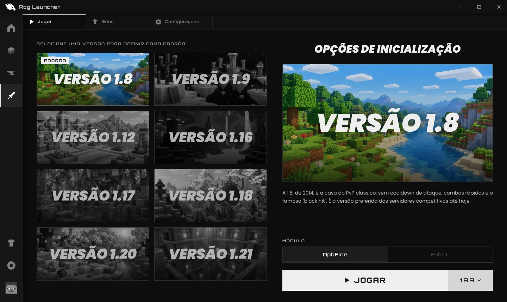
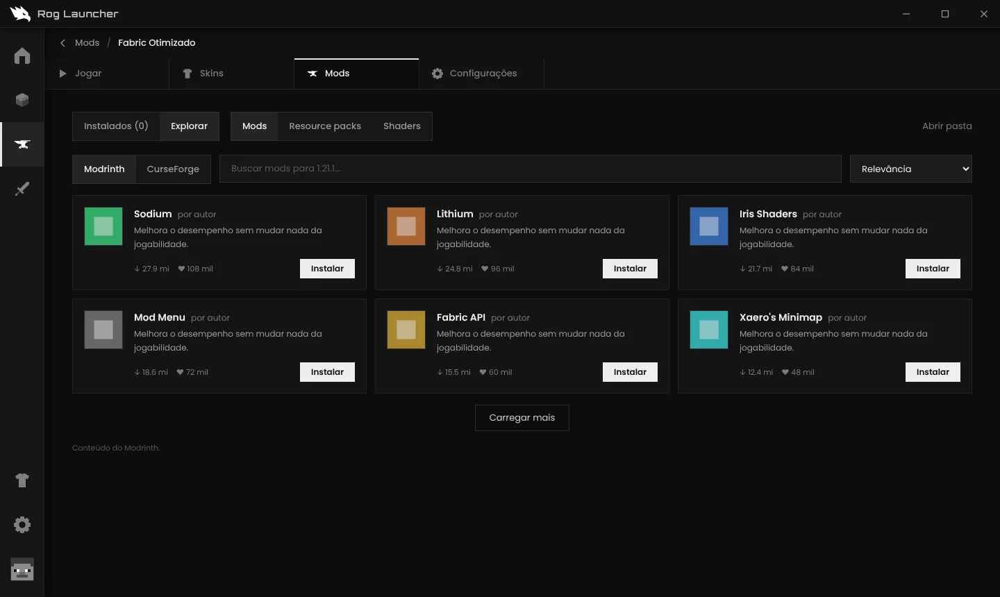

PRÉ-ALPHA
Seu Minecraft,

Seu Minecraft,
sem enrolação.
Um launcher leve e minimalista para Minecraft: Java Edition. Vanilla, mods, modpacks e PVP num lugar só, com login Microsoft oficial.
Um launcher leve e minimalista para Minecraft: Java Edition. Vanilla, mods, modpacks e PVP num lugar só, com login Microsoft oficial.
Feito em Rust com Tauri: abre rápido e usa pouca memória.
Vanilla, Fabric, Forge, NeoForge ou Quilt, cada uma com seus mundos, mods e configurações.
Busca e instala mods, resource packs, shaders e modpacks do Modrinth, com as dependências.
Escolha a versão de combate (1.8 até 1.21) e jogue com um clique.
Biblioteca de skins, skin global e skin própria por instância, trocada sozinha ao jogar.
Traga instâncias do Prism, CurseForge e MultiMC, ou arquivos .mrpack e .zip.
Entra com a sua conta Microsoft e confere se você tem o jogo, como manda a Mojang.


A pré-alpha para Windows está quase pronta. Acompanhe pelo GitHub.
Download em breveRog Launcher_x64-setup.exe).Aviso do Windows: o instalador ainda não tem assinatura digital, então o navegador ou o SmartScreen podem avisar que é um arquivo desconhecido. Para continuar, escolha Manter no download e Mais informações → Executar assim mesmo no Windows. O código é aberto no GitHub.
Pré-alpha: espere bugs. Encontrou algum? Abra uma issue no GitHub.